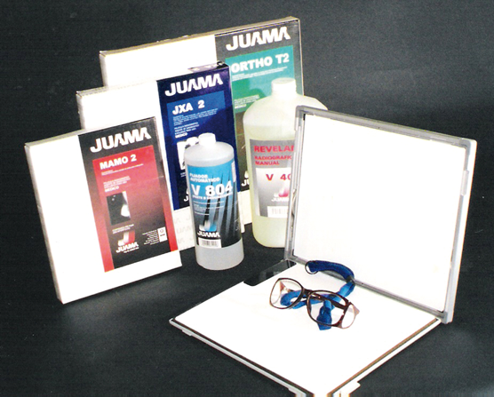

Chasis mdm para radiología

CARACTERÍSTICAS:
Chasis con pantalla con velocidad 100, 200, 400 o 600 sensible a la luz verde disponible en los siguientes tamaños:
• 20 × 25 cm.
• 25 × 30 cm.
• 30 × 35 cm.
• 35 × 35 cm.
• 35 × 43 cm.
• 15 × 30 cm.
Contamos con pantallas intensificadoras reforzadas por tierras raras de oxisulfuro.
Los CHASIS MDM le aseguran años de servicio sin problema.
DATOS COMPLEMENTARIOS: Para mayor información y asesoría técnica, favor de comunicarse a:

JUAMA, S.A. DE C.V.
Tels.: (55) 3098-9712, 3098-9727 y 3098-9737
Fax: (55) 5666-7694
e-mail: medica@juama.com
www.juama.com